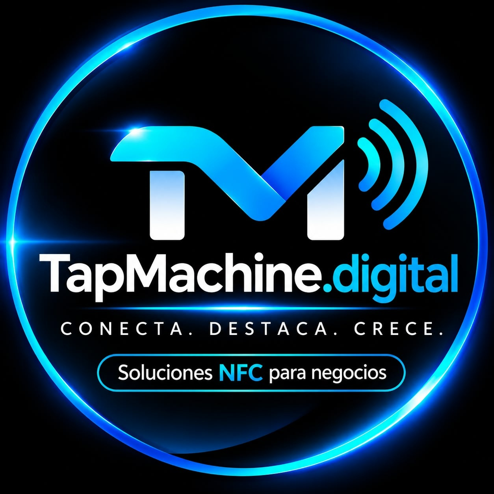
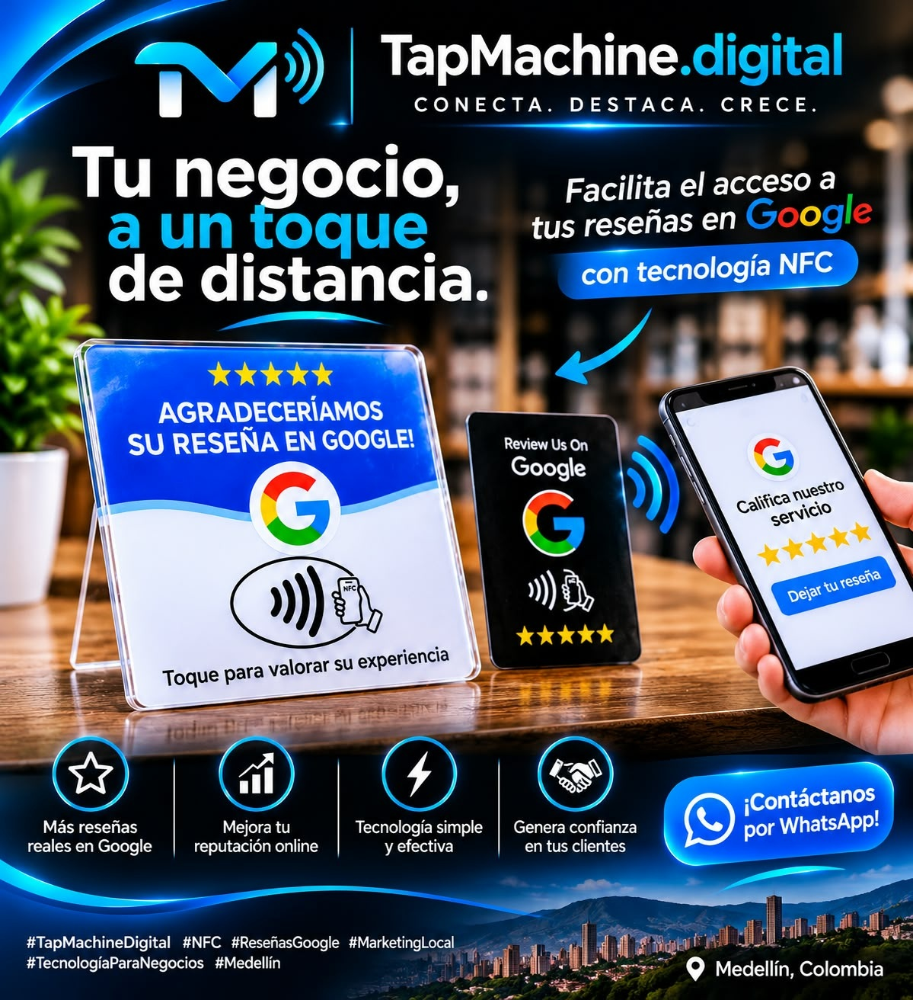

Más reseñas reales
Facilita el acceso al espacio donde tus clientes pueden compartir su experiencia.

Facilita que tus clientes lleguen a tus reseñas de Google con tecnología NFC. Una experiencia sencilla, rápida y memorable que ayuda a fortalecer tu reputación online.

Con TapMachine.digital, tus clientes pueden acercar su celular a tu dispositivo NFC y acceder fácilmente al destino digital que hayas configurado, como el espacio de reseñas de tu negocio en Google.
Una solución práctica para acercar tu negocio a tus clientes y hacer más fácil la interacción.
Facilita el acceso al espacio donde tus clientes pueden compartir su experiencia.
Haz más visible la reputación que construyes con un buen servicio.
La tecnología NFC permite conectar dispositivos compatibles con un solo acercamiento.
Invita a tus clientes a compartir opiniones auténticas sobre su experiencia.
La experiencia está pensada para ser intuitiva y rápida. Solo necesitas configurar el destino al que quieres dirigir a tus clientes.
Julian Mantinez está listo para orientarte y ayudarte a conocer las soluciones NFC de TapMachine.digital.